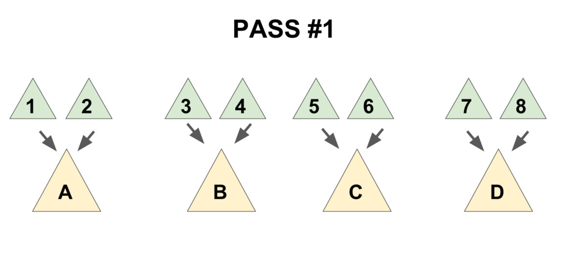

Pairing heap
简介¶
配对堆是一个支持插入，查询/删除最小值，合并，修改元素等操作的数据结构，也就是俗称的可并堆。
配对堆在 OI 界十分的冷门，但其实跑得比较快，也很好写，但不能可持久化，因为配对堆复杂度是势能分析出来的均摊复杂度。
定义¶
这里给出一个较为简单的定义，严谨的定义可以查阅参考文献[4]。
配对堆是一棵带权多叉树（如下图），其权值满足堆性质（即每个节点的权值都小于他的所有儿子）。

通常我们使用左儿子右兄弟表示法储存一个配对堆（如下图），从下文可以看出这种方式可以方便配对堆的实现。

各项操作的实现¶
存储结构定义¶
就是普通的带权多叉树的表示方式。
1 2 3 4 5 | |
查询最小值¶
从配对堆的定义可看出，配对堆的根节点的权值一定最小，所以我们直接返回根节点就行了。
合并¶
配对堆的合并操作极为简单，直接把根节点权值较大的那个配对堆设成另一个的儿子就好了。（如下图）

复杂度的话，操作本身显然是 O(1) 的，考虑到对势能的影响后还是均摊 O(1)
1 2 3 4 5 6 7 8 9 10 | |
插入¶
合并都有了，插入就直接把新元素视为一个新的配对堆和原堆合并就行啦。
删除最小值¶
到这里我们会发现，前面的几个操作都十分偷懒，几乎完全没有对数据结构进行维护，所以删除最小值是配对堆最重要的（也是最复杂）的一个操作。
考虑我们拿掉根节点之后会发生什么，根节点原来的所有儿子构成了一片森林，所以我们要把他们合并起来。
一个很自然的想法是使用 merge 函数把儿子们一个一个并在一起，这样做的话正确性是显然的，但是会导致复杂度退化到 O(n)。为了保证删除操作的均摊复杂度为 O(\log n)，我们需要：把儿子们 从左往右 两两配成一对，用 merge 操作把被配成同一对的两个儿子合并到一起（见下图 1)，再将新产生的堆 从右往左 暴力合并在一起（见下图 2）。
先实现一个辅助函数 merges，作用是合并一个节点的所有兄弟。
1 2 3 4 5 6 7 | |
最后一句话是该函数的核心，这句话分三部分：
merge(x,a)“配对”了 x 和 a。merges(b)递归合并 b 和他的兄弟们。- 将上面 2 个操作产生的 2 个新树合并。
需要注意到的是，上文提到了配对方向和合并方向是有要求的（从左往右配对，从右往左合并），该递归函数的实现已保证了这个顺序，如果读者需要自行实现迭代版本的话请务必注意保证该顺序，否则复杂度将失去保证。
有了 merges 函数，delete-min 操作就显然了。（因为这个封装实在没啥用，实际在实现时中一般不显式写出这个函数）
1 | |
减小一个元素的值¶
要实现这个操作，需要给节点添加一个 father 指针，其指向前一个节点而非树形结构的父节点。
首先节点的定义修改为：
1 2 3 4 5 6 | |
merge 操作修改为：
1 2 3 4 5 6 7 8 9 10 11 12 13 | |
merges 操作修改为：
1 2 3 4 5 6 7 8 9 10 11 12 13 14 | |
现在我们来考虑如何实现 decrease-key 操作。
首先我们发现，当我们对节点 x 进行 decrease-key 操作后，以 x 为根的子树仍然满足配对堆性质，但 x 的父亲和 x 之间可能不再满足堆性质。
因此我们可以把整棵以 x 为根的子树剖出来，这样现在两棵树都符合配对堆性质了，再把他们 merge 起来就做完了。
这个操作本身复杂度显然为 O(1)，但会破坏原有的势能分析过程，因此均摊复杂度难以证明（目前学术界还无法给出复杂度的精确值），通常可以简单的认为复杂度为 o(\log n)（注意这里为小 o）。
1 2 3 4 5 6 7 8 9 10 11 12 13 14 15 | |
复杂度分析¶
见 配对堆的论文。
参考文献¶
- HOOCCOOH 的题解
- 集训队论文《黄源河 -- 左偏树的特点及其应用》
- 《配对堆中文版》
- 维基百科 pairing heap 词条
- https://blog.csdn.net/luofeixiongsix/article/details/50640668
- https://brilliant.org/wiki/pairing-heap/（注：本条目所有图片均来自这里）
build本页面最近更新：，更新历史
edit发现错误？想一起完善？ 在 GitHub 上编辑此页！
people本页面贡献者：OI-wiki
copyright本页面的全部内容在 CC BY-SA 4.0 和 SATA 协议之条款下提供，附加条款亦可能应用